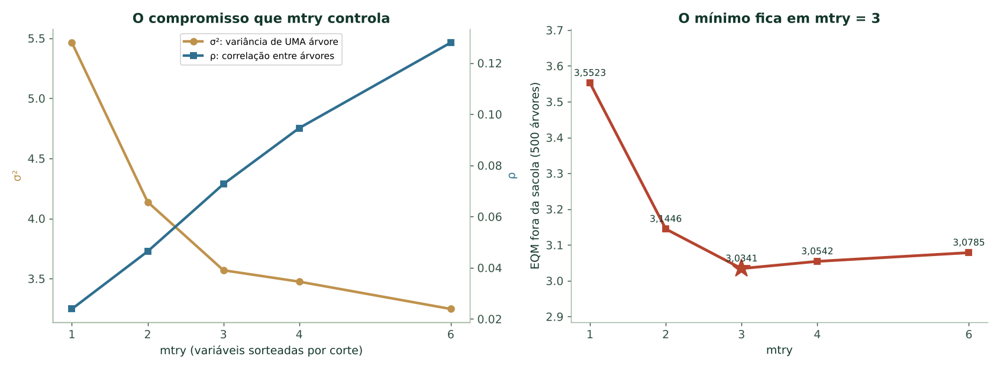
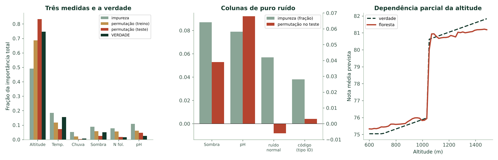

Random forests
Bagging de árvores com um sorteio de variáveis em cada corte — árvores piores, mas menos parecidas, cuja média erra menos.
Comece por aqui
O bagging tira a média de árvores ajustadas em reamostras, e o seu ganho tem um limite: a correlação entre as árvores. Elas se parecem porque, em cada reamostra, a mesma variável forte é escolhida no topo. Breiman (2001) acrescentou um ingrediente: em cada corte, só um sorteio de mtry variáveis pode ser usado. Algumas árvores são obrigadas a começar sem a variável dominante, e ficam diferentes das outras. A média de árvores menos parecidas varia menos.
A random forest raramente é o melhor método para um problema, mas quase nunca é ruim, tem praticamente um único parâmetro a ajustar e traz uma estimativa honesta do erro sem validação cruzada. Por isso é o ponto de partida recomendado para predição com dados tabulares — a referência que outros métodos precisam bater.
O que é uma random forest
Para \(b=1,\dots,B\): sorteia-se uma reamostra bootstrap; cresce-se uma árvore profunda nela, mas em cada nó escolhem-se ao acaso \(m\) das \(p\) preditoras e procura-se o melhor corte só entre elas. A predição é a média das \(B\) árvores. Com \(m=p\), recupera-se o bagging. Os valores usuais são \(m=p/3\) na regressão e \(m=\sqrt p\) na classificação.

| Aspecto | Bagging | Random forest |
|---|---|---|
| Variáveis candidatas por corte | Todas (p) | Sorteio de m < p |
| Correlação entre árvores | Maior | Menor |
| Variância de cada árvore | Menor | Maior |
| Erro do comitê | Limitado por ρσ² | Em geral menor |
| Variável dominante | Sempre no topo | Às vezes ausente |
Pressupostos e como verificá-los
| Pressuposto ou cuidado | Por que importa | Como verificar |
|---|---|---|
| Observações independentes | OOB e bootstrap supõem isso. | Com grupos, use validação por grupo. |
| mtry razoável | É o único ajuste relevante. | tuneRF ou curva do erro OOB. |
| B suficiente | A curva do erro deve estabilizar. | plot(rf). |
| Importância lida com cuidado | A de impureza favorece variáveis com muitos cortes; correlações dividem importância. | Use permutação no teste; inclua uma coluna de ruído como referência. |
| Sem extrapolação | Fora da faixa, a predição é constante. | Faixa das preditoras. |
| Classes muito desequilibradas | O voto favorece a maioria. | Probabilidades e limiar; amostragem estratificada. |
Formulação e cálculo
Em que:
- \(T_b\)
- a \(b\)-ésima árvore
- \(\Theta_b\)
- o acaso que a define: a reamostra bootstrap e os sorteios de variáveis em cada nó
A mesma decomposição do bagging vale, agora com \(\rho(m)\) e \(\sigma^2(m)\) dependendo de \(m\):
Em que:
- \(\rho(m)\)
- correlação entre duas árvores: cresce com \(m\)
- \(\sigma^2(m)\)
- variância de uma árvore: diminui com \(m\)
Exemplo numérico, com a verdade conhecida
| mtry | σ² (uma árvore) | ρ | ρσ² | EQM OOB (500 árvores) |
|---|---|---|---|---|
| 1 | 5,4636 | 0,0239 | 0,1306 | 3,5523 |
| 2 | 4,1377 | 0,0464 | 0,1920 | 3,1446 |
| 3 | 3,5695 | 0,0727 | 0,2596 | 3,0341 |
| 4 | 3,4748 | 0,0946 | 0,3286 | 3,0542 |
| 6 (bagging) | 3,2476 | 0,1280 | 0,4156 | 3,0785 |
De mtry = 6 para mtry = 1, a correlação entre árvores cai de 0,1280 para 0,0239 — mais de cinco vezes —, e o piso \(\rho\sigma^2\) cai de 0,4156 para 0,1306. Mas cada árvore fica muito pior: \(\sigma^2\) sobe de 3,2476 para 5,4636, e uma árvore que escolhe o corte numa variável sorteada erra também em viés, que a média não remove. O ótimo está no meio, em mtry = 3 = \(p/2\). A diferença entre o melhor (3,0341) e o bagging (3,0785) é pequena aqui porque, nestes dados simulados, as árvores do bagging já eram pouco correlacionadas.
Importância das variáveis
Por impureza: soma, em todas as árvores, da redução da soma de quadrados (ou do Gini) produzida pelos cortes em cada variável. Por permutação: quanto o erro aumenta quando os valores de uma variável são embaralhados, quebrando sua relação com a resposta — calculada nas observações fora da sacola ou num conjunto de teste.
Em que:
- \(\text{EQM}_b\)
- erro da árvore \(b\) nas observações que não usou
- \(\text{Imp}_j\)
- aumento médio do erro ao destruir a informação de \(x_j\)
Propriedades
- Mais árvores nunca causam sobreajuste: o erro OOB estabiliza.
- Pouco sensível a mtry numa faixa larga; quase nada a outros parâmetros.
- A importância por impureza é viciada a favor de variáveis contínuas e com muitos valores distintos (Strobl et al., 2007).
- Preditoras correlacionadas dividem a importância entre si.
- A dependência parcial mostra a forma média do efeito, supondo as demais fixas.
- Herda das árvores: interações automáticas, nenhuma extrapolação.
Como interpretar os resultados
| Elemento | O que informa | Cuidado |
|---|---|---|
| EQM OOB, % Var explained | Erro esperado em dados novos. | É OOB; não precisa de validação cruzada. |
%IncMSE | Importância por permutação (OOB). | Dividida entre variáveis correlacionadas. |
IncNodePurity | Importância por impureza. | Viciada; não use sozinha. |
| Dependência parcial | Forma média do efeito. | Com preditoras correlacionadas, extrapola para combinações irreais. |
| Matriz de confusão OOB | Desempenho por classe. | Limiar 0,5 por padrão. |
A importância por permutação mede quanto o modelo depende de uma variável, não quanto a variável causa a resposta. Nos dados, a altitude e a temperatura têm correlação −0,822; a floresta usa as duas de forma intercambiável, e a permutação de uma delas é parcialmente compensada pela outra. Por isso as importâncias absolutas da altitude (1,413) e da temperatura (0,123) no teste ficam bem abaixo das verdadeiras (17,578 e 3,656), embora a ordem esteja certa.
Como executar no R e em Python
Onde executar o código em Python
Não é preciso instalar nada: o Google Colab é um computador na nuvem, gratuito, que executa Python pelo navegador e já traz as bibliotecas usadas aqui (numpy, scipy e matplotlib).
randomForest(), do pacote de mesmo nome (Liaw e Wiener, 2002), é a implementação de referência: ntree, mtry, nodesize (tamanho mínimo da folha) e importance = TRUE para a importância por permutação. importance(), varImpPlot() e partialPlot() extraem os resultados. O pacote ranger faz o mesmo de forma muito mais rápida e com paralelização. Em Python, sklearn.ensemble.RandomForestRegressor e RandomForestClassifier (max_features é o mtry), com sklearn.inspection.permutation_importance e partial_dependence.
library(randomForest)
set.seed(1)
rf <- randomForest(nota ~ alt + temp + chuva + somb + nfol + ph,
data = cafe, ntree = 500, mtry = 3, importance = TRUE)
rf; plot(rf)
importance(rf); varImpPlot(rf)
partialPlot(rf, pred.data = cafe, x.var = "alt")
Exemplo de aplicação
Contexto dos dados
Os dados são fictícios e foram criados pelo autor: 600 lotes de café, cada um com a nota sensorial (escala SCA, de 70,0 a 86,1) e seis variáveis da lavoura — altitude (600 a 1.500 m), temperatura média (14 a 26 °C), chuva anual (mm), sombreamento (%), nitrogênio foliar (dag/kg) e pH do solo. Um lote é fino quando a nota é 80 ou mais (204 lotes, 34,0%). O processo gerador é conhecido e foi desenhado para ter as duas estruturas que os modelos aditivos não representam: um degrau de +4,6 pontos acima de 1.050 m de altitude e uma interação — o sombreamento melhora a nota quando a temperatura passa de 20,5 °C e a piora abaixo disso —, além de partes suaves em chuva, nitrogênio e pH e um erro de desvio-padrão 1,55. Altitude e temperatura têm correlação de −0,822, como na realidade. Como a verdade é conhecida, sabem-se os dois pisos: nenhum modelo de regressão pode ter erro quadrático esperado abaixo de \(\sigma^2=2{,}4025\), e nenhum classificador pode errar menos que o erro de Bayes, 0,1596. O mesmo conjunto atravessa as dez fichas dos grupos de árvores e de classificadores, o que permite comparar todos os métodos na mesma régua.
Código em R
# Random forests: exemplo completo ----
# Pacotes: randomForest (ou ranger, mais rápido) e pdp (dependência parcial, opcional)
# Dados fictícios: 600 lotes de café (arquivo cafe.csv, pasta scripts/ do site).
# Baixe o arquivo para a pasta de trabalho, ou leia direto do endereço:
url <- "https://cassiushenrique.github.io/ModelosEstatisticos/scripts/cafe.csv"
cafe <- if (file.exists("cafe.csv")) read.csv("cafe.csv") else read.csv(url)
str(cafe) # nota, fino (0/1), alt, temp, chuva, somb, nfol, ph
cafe$fino_f <- factor(cafe$fino, levels = c(0, 1), labels = c("nao", "fino"))
table(cafe$fino_f)
library(randomForest)
f <- nota ~ alt + temp + chuva + somb + nfol + ph
# ---- 1. A floresta padrão (mtry = p/3 na regressão, raiz de p na classificação)
set.seed(1)
rf <- randomForest(f, data = cafe, ntree = 500, importance = TRUE)
rf # EQM OOB e % de variância explicada
plot(rf) # erro OOB em função do número de árvores
# ---- 2. O único parâmetro que importa: mtry
oob <- sapply(1:6, function(m) {
set.seed(1); tail(randomForest(f, data = cafe, mtry = m, ntree = 500)$mse, 1) })
plot(1:6, oob, type = "b", xlab = "mtry", ylab = "EQM OOB")
# tuneRF() faz uma busca automática
set.seed(1); tuneRF(cafe[, c("alt","temp","chuva","somb","nfol","ph")], cafe$nota, ntreeTry = 300)
# ---- 3. Importância das variáveis: permutação (%IncMSE) e impureza (IncNodePurity)
importance(rf)
varImpPlot(rf)
# Calibrando o olho: acrescente colunas de puro ruído e veja a importância delas
set.seed(4)
cafe2 <- transform(cafe, ruido = rnorm(nrow(cafe)), codigo = sample(0:499, nrow(cafe), TRUE))
rf2 <- randomForest(nota ~ alt + temp + chuva + somb + nfol + ph + ruido + codigo,
data = cafe2, mtry = 3, importance = TRUE)
importance(rf2)
# ---- 4. Dependência parcial: a forma do efeito de cada variável
partialPlot(rf, pred.data = cafe, x.var = "alt")
partialPlot(rf, pred.data = cafe, x.var = "somb")
# Interação: dependência parcial em duas variáveis (pacote pdp)
# install.packages("pdp")
library(pdp)
pd2 <- partial(rf, pred.var = c("temp", "somb"), train = cafe)
plotPartial(pd2)
# ---- 5. Classificação
set.seed(1)
rfc <- randomForest(fino_f ~ alt + temp + chuva + somb + nfol + ph, data = cafe, ntree = 500)
rfc # matriz de confusão OOB
head(predict(rfc, type = "prob")) # probabilidades OOB
# ---- 6. ranger: a mesma floresta, muito mais rápida, com importância por permutação
# install.packages("ranger")
library(ranger)
rg <- ranger(f, data = cafe, num.trees = 500, mtry = 3, importance = "permutation")
rg$prediction.error; sort(rg$variable.importance, decreasing = TRUE)
A mesma análise em Python, com os resultados
Cole o código em um notebook do Google Colab ↗ e execute com Shift+Enter. Os valores abaixo são a saída desse código.
import numpy as np
# ------------------------------------------------------------------
# Bloco comum às fichas deste grupo: funções auxiliares e dados (cab16)
# ------------------------------------------------------------------
import numpy as np
from scipy.stats import norm
# ------------------------------------------------------------------
# Bloco comum às fichas deste grupo: funções auxiliares e dados (dados16)
# ------------------------------------------------------------------
import numpy as np
import pandas as pd
def le_csv(nome):
"""Lê o arquivo de dados da ficha: primeiro na pasta atual; se não
estiver lá (por exemplo, no Google Colab), direto do site."""
try:
return pd.read_csv(nome)
except FileNotFoundError:
return pd.read_csv('https://cassiushenrique.github.io/ModelosEstatisticos/scripts/' + nome)
# Dados fictícios: 600 lotes de café (arquivo cafe.csv, pasta scripts/ do site)
cafe = le_csv('cafe.csv')
ALT, TEMP, CHUVA = (cafe[k].to_numpy(float) for k in ('alt', 'temp', 'chuva'))
SOMB, NFOL, PH = (cafe[k].to_numpy(float) for k in ('somb', 'nfol', 'ph'))
NOTA = cafe['nota'].to_numpy(float); FINO = cafe['fino'].to_numpy(int)
NOMES=['alt','temp','chuva','somb','nfol','ph']
ROT={'alt':'Altitude','temp':'Temperatura','chuva':'Chuva','somb':'Sombreamento','nfol':'N foliar','ph':'pH'}
X=np.column_stack([ALT,TEMP,CHUVA,SOMB,NFOL,PH])
NC,PC=X.shape; SIGN=1.55
def f_nota(alt,temp,chuva,somb,nfol,ph):
deg=4.6*(np.asarray(alt)>=1050); rampa=0.0028*np.clip(np.asarray(alt)-700,0,None)
inter=np.where(np.asarray(temp)>20.5,0.052*np.asarray(somb),-0.030*np.asarray(somb))
agua=-2.6e-6*(np.asarray(chuva)-1450)**2
nitro=2.9*np.log(np.asarray(nfol)/1.6); acid=-1.9*(np.asarray(ph)-5.4)**2
return 74.0+deg+rampa+inter+agua+nitro+acid
def verdade(A): return f_nota(A[:,0],A[:,1],A[:,2],A[:,3],A[:,4],A[:,5])
# ------------------------------------------------------------------ fim do bloco comum
def c(v, d=4): return ('%.*f' % (d, v)).replace('.', ',')
def eqm(o, p): return float(np.mean((np.asarray(o) - np.asarray(p))**2))
def r2(o, p): return 1 - float(np.sum((np.asarray(o)-np.asarray(p))**2))/float(np.sum((np.asarray(o)-np.mean(o))**2))
def acur(o, p): return float(np.mean(np.asarray(o) == np.asarray(p)))
MU = verdade(X) # média verdadeira da nota
PVER = 1 - norm.cdf((80 - MU)/SIGN) # P(fino | x) verdadeira
ERRO_BAYES = float(np.mean(np.minimum(PVER, 1 - PVER)))
EQM_PISO = SIGN**2
def dobras(n, k, seed):
rg = np.random.default_rng(seed)
d = np.tile(np.arange(k), int(np.ceil(n/k)))[:n]; rg.shuffle(d); return d
def cv_reg(fabrica, A, y, k=10, seed=0, reps=1):
"""EQM por validação cruzada. fabrica() devolve um estimador sklearn novo."""
tot = []
for r in range(reps):
d = dobras(len(y), k, seed + 101*r); e = np.empty(len(y))
for j in range(k):
tr, te = d != j, d == j
m = fabrica().fit(A[tr], y[tr]); e[te] = y[te] - m.predict(A[te])
tot.append(float(np.mean(e**2)))
return float(np.mean(tot)), (float(np.std(tot, ddof=1)) if reps > 1 else 0.0)
def cv_clf(fabrica, A, y, k=10, seed=0, reps=1, prob=False):
"""Erro de classificação (e, se prob, log-loss e Brier) por validação cruzada."""
err = []; ll = []; br = []
for r in range(reps):
d = dobras(len(y), k, seed + 101*r); pred = np.empty(len(y)); pp = np.empty(len(y))
for j in range(k):
tr, te = d != j, d == j
m = fabrica().fit(A[tr], y[tr]); pred[te] = m.predict(A[te])
if prob: pp[te] = m.predict_proba(A[te])[:, 1]
err.append(float(np.mean(pred != y)))
if prob:
q = np.clip(pp, 1e-6, 1 - 1e-6)
ll.append(float(-np.mean(y*np.log(q) + (1 - y)*np.log(1 - q))))
br.append(float(np.mean((pp - y)**2)))
if prob: return float(np.mean(err)), float(np.mean(ll)), float(np.mean(br))
return float(np.mean(err)), (float(np.std(err, ddof=1)) if reps > 1 else 0.0)
def padroniza(A, ref=None):
ref = A if ref is None else ref
mu, sd = ref.mean(0), ref.std(0, ddof=1); return (A - mu)/sd, mu, sd
DADOS_TXT = ('600 lotes de café, nota sensorial (escala SCA, de 70 a 86) e seis variáveis de lavoura: '
'altitude, temperatura média, chuva anual, sombreamento, N foliar e pH. Lote "fino" = nota >= 80.')
# ------------------------------------------------------------------ fim do bloco comum
from sklearn.ensemble import RandomForestRegressor, RandomForestClassifier
from sklearn.tree import DecisionTreeRegressor
from sklearn.inspection import permutation_importance
y=NOTA
print('LOTES DE CAFÉ:',DADOS_TXT)
print('Resposta: a nota. Piso irredutível sigma² = %s. p = 6 preditoras.'%c(EQM_PISO))
print('\n'+'='*70)
print('O ÚNICO PARÂMETRO QUE IMPORTA: mtry, quantas variáveis sorteadas por corte')
print('mtry = 6 é o bagging; mtry = 1 escolhe o corte numa variável ao acaso.')
rg=np.random.default_rng(11)
idx=rg.permutation(NC); te,tr=idx[:200],idx[200:]; n=len(tr)
Xtr,Xte=X[tr],X[te]
R,Bb=20,40
print('Para cada mtry: variância de uma árvore (s²), correlação entre árvores')
print('(rho), ambos sobre 20 conjuntos de treino novos, e o EQM OOB da floresta.')
print()
print('%6s %12s %10s %14s %14s'%('mtry','s² (1 árv.)','rho','rho*s²','EQM OOB'))
for mt in [1,2,3,4,6]:
Q=np.empty((R,Bb,len(te)))
for r in range(R):
yr=MU[tr]+rg.normal(0,SIGN,n)
f=RandomForestRegressor(n_estimators=Bb,max_features=mt,random_state=r).fit(Xtr,yr)
Q[r]=np.array([t.predict(Xte) for t in f.estimators_])
s2=float(np.mean(Q.reshape(R*Bb,-1).var(0,ddof=1)))
cov=float(np.mean(Q.mean(1).var(0,ddof=1)-Q.var(1,ddof=1).mean(0)/Bb))
oob=RandomForestRegressor(n_estimators=500,max_features=mt,oob_score=True,random_state=0).fit(X,y)
print('%6d %12s %10s %14s %14s'%(mt,c(s2),c(cov/s2),c(cov),c(eqm(y,oob.oob_prediction_))))
print()
print('Diminuir mtry torna cada árvore PIOR (s² sobe) mas MENOS PARECIDA com')
print('as outras (rho cai). O erro da floresta é o equilíbrio entre os dois.')
print('\n'+'='*70)
print('A FLORESTA ESCOLHIDA, contra as alternativas (10 dobras x 3 repetições)')
from sklearn.linear_model import LinearRegression
print()
print('%-34s %14s'%('modelo','EQM 10-fold'))
for nm,f in [('regressão linear',LinearRegression),
('uma árvore podada',lambda: DecisionTreeRegressor(ccp_alpha=0.0443,random_state=0)),
('bagging (mtry = 6), 300 árvores',lambda: RandomForestRegressor(300,max_features=6,random_state=0)),
('random forest mtry = 2, 300 árvores',lambda: RandomForestRegressor(300,max_features=2,random_state=0)),
('random forest mtry = 3, 300 árvores',lambda: RandomForestRegressor(300,max_features=3,random_state=0)),
('rf mtry = 3, folha mínima 5',lambda: RandomForestRegressor(300,max_features=3,min_samples_leaf=5,random_state=0))]:
v,_=cv_reg(f,X,y,10,0,3); print('%-34s %14s'%(nm,c(v)))
print('%-34s %14s'%('função verdadeira (piso)',c(eqm(y,MU))))
print('\n'+'='*70)
print('QUANTAS ÁRVORES? O EQM OOB em função de B (mtry = 3)')
f=RandomForestRegressor(n_estimators=10,max_features=3,random_state=0,oob_score=True,warm_start=True)
curva={}
for b in (25,50,100,200,500,1000):
f.set_params(n_estimators=b); f.fit(X,y) # warm_start: acrescenta árvores
curva[b]=eqm(y,f.oob_prediction_)
print()
for b,v in curva.items(): print(' B = %5d EQM OOB = %s'%(b,c(v)))
print('Mais árvores nunca causam sobreajuste: o erro só estabiliza.')
print('\n'+'='*70)
print('IMPORTÂNCIA DAS VARIÁVEIS: duas medidas, e a verdade')
print('Verdade: quanto o EQM da função verdadeira piora se a variável for')
print('embaralhada (permutação aplicada à própria função geradora).')
rf=RandomForestRegressor(500,max_features=3,random_state=0,oob_score=True).fit(X,y)
imp_imp=rf.feature_importances_
pi=permutation_importance(rf,X,y,n_repeats=20,random_state=0)
idx=rg.permutation(NC); te,tr=idx[:200],idx[200:]
rf2=RandomForestRegressor(500,max_features=3,random_state=0).fit(X[tr],y[tr])
pit=permutation_importance(rf2,X[te],y[te],n_repeats=30,random_state=0)
verd=[]
for j in range(6):
v=[]
for r in range(30):
Z=X.copy(); Z[:,j]=rg.permutation(Z[:,j]); v.append(np.mean((verdade(Z)-MU)**2))
verd.append(np.mean(v))
verd=np.array(verd)
print()
print('%-14s %14s %16s %16s %16s'%('variável','impureza (%)','perm. no treino','perm. no teste','VERDADE'))
for j in range(6):
print('%-14s %14s %16s %16s %16s'%(ROT[NOMES[j]],c(100*imp_imp[j],1),c(pi.importances_mean[j],3),c(pit.importances_mean[j],3),c(verd[j],3)))
print()
print('A altitude e a temperatura têm correlação %s. Uma floresta pode usar'%c(np.corrcoef(X[:,0],X[:,1])[0,1],3))
print('uma no lugar da outra, e a importância se divide entre elas.')
print('\n'+'='*70)
print('UMA VARIÁVEL DE RUÍDO, para calibrar o olho')
Xr=np.column_stack([X,rg.normal(size=NC),rg.integers(0,500,NC).astype(float)])
rf3=RandomForestRegressor(500,max_features=3,random_state=0).fit(Xr[tr],y[tr])
a=rf3.feature_importances_; p=permutation_importance(rf3,Xr[te],y[te],n_repeats=30,random_state=0).importances_mean
print('Acrescentamos duas colunas sem relação com a nota: ruído normal e um')
print('código inteiro de 0 a 499 (muitos valores distintos, como um ID).')
print()
print('%-22s %14s %16s'%('variável','impureza (%)','perm. no teste'))
for nm,j in [('Sombreamento',3),('pH',5),('ruído normal',6),('código (tipo ID)',7)]:
print('%-22s %14s %16s'%(nm,c(100*a[j],1),c(p[j],3)))
print()
print('A importância por impureza atribui uma fatia visível a colunas sem')
print('NENHUMA relação com a nota, porque elas oferecem muitos cortes possíveis')
print('para ajustar ruído. A permutação no teste dá a elas praticamente zero.')
print('\n'+'='*70)
print('DEPENDÊNCIA PARCIAL: a forma do efeito da altitude')
print('Média das predições com a altitude fixada em cada valor, as demais nos')
print('valores observados:')
print()
print('%10s %14s %14s'%('altitude','floresta','verdade'))
for a in [650,800,950,1040,1060,1150,1300,1450]:
Z=X.copy(); Z[:,0]=a
print('%10d %14s %14s'%(a,c(float(rf.predict(Z).mean()),3),c(float(verdade(Z).mean()),3)))
print()
print('O degrau aparece nítido: o corte em altitude é tão forte que quase todas')
print('as árvores o fazem perto de 1.050 m. Entre os degraus, a média de muitas')
print('escadas com cortes diferentes vira uma rampa suave.')
print('\n'+'='*70)
print('CLASSIFICAÇÃO (fino ou não), 10 dobras x 3 repetições')
print()
print('%-30s %10s %10s %10s'%('modelo','erro','log-loss','Brier'))
for mt in [1,2,3,6]:
er,ll,br=cv_clf(lambda mt=mt: RandomForestClassifier(300,max_features=mt,random_state=0),X,FINO,10,0,3,prob=True)
print('%-30s %10s %10s %10s'%('random forest, mtry = %d'%mt,c(er),c(ll),c(br)))
print('%-30s %10s'%('erro de Bayes',c(ERRO_BAYES)))
Resultados da execução
LOTES DE CAFÉ: 600 lotes de café, nota sensorial (escala SCA, de 70 a 86) e seis variáveis de lavoura: altitude, temperatura média, chuva anual, sombreamento, N foliar e pH. Lote "fino" = nota >= 80.
Resposta: a nota. Piso irredutível sigma² = 2,4025. p = 6 preditoras.
======================================================================
O ÚNICO PARÂMETRO QUE IMPORTA: mtry, quantas variáveis sorteadas por corte
mtry = 6 é o bagging; mtry = 1 escolhe o corte numa variável ao acaso.
Para cada mtry: variância de uma árvore (s²), correlação entre árvores
(rho), ambos sobre 20 conjuntos de treino novos, e o EQM OOB da floresta.
mtry s² (1 árv.) rho rho*s² EQM OOB
1 5,4636 0,0239 0,1306 3,5523
2 4,1377 0,0464 0,1920 3,1446
3 3,5695 0,0727 0,2596 3,0341
4 3,4748 0,0946 0,3286 3,0542
6 3,2476 0,1280 0,4156 3,0785
Diminuir mtry torna cada árvore PIOR (s² sobe) mas MENOS PARECIDA com
as outras (rho cai). O erro da floresta é o equilíbrio entre os dois.
======================================================================
A FLORESTA ESCOLHIDA, contra as alternativas (10 dobras x 3 repetições)
modelo EQM 10-fold
regressão linear 5,2218
uma árvore podada 3,6933
bagging (mtry = 6), 300 árvores 3,1107
random forest mtry = 2, 300 árvores 3,1860
random forest mtry = 3, 300 árvores 3,0805
rf mtry = 3, folha mínima 5 3,1355
função verdadeira (piso) 2,5695
======================================================================
QUANTAS ÁRVORES? O EQM OOB em função de B (mtry = 3)
B = 25 EQM OOB = 3,3730
B = 50 EQM OOB = 3,2094
B = 100 EQM OOB = 3,0475
B = 200 EQM OOB = 3,0606
B = 500 EQM OOB = 3,0341
B = 1000 EQM OOB = 3,0223
Mais árvores nunca causam sobreajuste: o erro só estabiliza.
======================================================================
IMPORTÂNCIA DAS VARIÁVEIS: duas medidas, e a verdade
Verdade: quanto o EQM da função verdadeira piora se a variável for
embaralhada (permutação aplicada à própria função geradora).
variável impureza (%) perm. no treino perm. no teste VERDADE
Altitude 49,1 1,686 1,413 17,578
Temperatura 18,4 0,288 0,123 3,656
Chuva 5,2 0,054 0,006 0,150
Sombreamento 8,8 0,140 0,043 1,186
N foliar 7,7 0,137 0,030 0,356
pH 10,9 0,148 0,079 0,607
A altitude e a temperatura têm correlação -0,822. Uma floresta pode usar
uma no lugar da outra, e a importância se divide entre elas.
======================================================================
UMA VARIÁVEL DE RUÍDO, para calibrar o olho
Acrescentamos duas colunas sem relação com a nota: ruído normal e um
código inteiro de 0 a 499 (muitos valores distintos, como um ID).
variável impureza (%) perm. no teste
Sombreamento 8,7 0,039
pH 7,9 0,068
ruído normal 5,7 -0,006
código (tipo ID) 3,8 0,003
A importância por impureza atribui uma fatia visível a colunas sem
NENHUMA relação com a nota, porque elas oferecem muitos cortes possíveis
para ajustar ruído. A permutação no teste dá a elas praticamente zero.
======================================================================
DEPENDÊNCIA PARCIAL: a forma do efeito da altitude
Média das predições com a altitude fixada em cada valor, as demais nos
valores observados:
altitude floresta verdade
650 75,354 75,040
800 75,604 75,320
950 75,966 75,740
1040 76,033 75,992
1060 80,969 80,648
1150 80,749 80,900
1300 81,068 81,320
1450 81,213 81,740
O degrau aparece nítido: o corte em altitude é tão forte que quase todas
as árvores o fazem perto de 1.050 m. Entre os degraus, a média de muitas
escadas com cortes diferentes vira uma rampa suave.
======================================================================
CLASSIFICAÇÃO (fino ou não), 10 dobras x 3 repetições
modelo erro log-loss Brier
random forest, mtry = 1 0,1978 0,4058 0,1317
random forest, mtry = 2 0,1911 0,3959 0,1286
random forest, mtry = 3 0,1933 0,4037 0,1294
random forest, mtry = 6 0,1806 0,4209 0,1307
erro de Bayes 0,1596
| Modelo | EQM 10-fold |
|---|---|
| Regressão linear | 5,2218 |
| Uma árvore podada | 3,6933 |
| Bagging (mtry = 6) | 3,1107 |
| Random forest, mtry = 2 | 3,1860 |
| Random forest, mtry = 3 | 3,0805 |
| Random forest, mtry = 3, folha mínima 5 | 3,1355 |
| Função verdadeira (piso) | 2,5695 |
| B | EQM OOB |
|---|---|
| 25 | 3,3730 |
| 50 | 3,2094 |
| 100 | 3,0475 |
| 200 | 3,0606 |
| 500 | 3,0341 |
| 1.000 | 3,0223 |
| Variável | Impureza (%) | Permutação no treino | Permutação no teste | Verdade |
|---|---|---|---|---|
| Altitude | 49,1 | 1,686 | 1,413 | 17,578 |
| Temperatura | 18,4 | 0,288 | 0,123 | 3,656 |
| Chuva | 5,2 | 0,054 | 0,006 | 0,150 |
| Sombreamento | 8,8 | 0,140 | 0,043 | 1,186 |
| N foliar | 7,7 | 0,137 | 0,030 | 0,356 |
| pH | 10,9 | 0,148 | 0,079 | 0,607 |
| Variável | Impureza (%) | Permutação no teste |
|---|---|---|
| Sombreamento | 8,7 | 0,039 |
| pH | 7,9 | 0,068 |
| Ruído normal | 5,7 | −0,006 |
| Código (tipo identificador) | 3,8 | 0,003 |
| Altitude (m) | Floresta | Verdade |
|---|---|---|
| 650 | 75,354 | 75,040 |
| 950 | 75,966 | 75,740 |
| 1.040 | 76,033 | 75,992 |
| 1.060 | 80,969 | 80,648 |
| 1.300 | 81,068 | 81,320 |
| 1.450 | 81,213 | 81,740 |
| mtry | Erro | Log-loss | Brier |
|---|---|---|---|
| 1 | 0,1978 | 0,4058 | 0,1317 |
| 2 | 0,1911 | 0,3959 | 0,1286 |
| 3 | 0,1933 | 0,4037 | 0,1294 |
| 6 (bagging) | 0,1806 | 0,4209 | 0,1307 |
| Erro de Bayes | 0,1596 | — | — |
Leitura: a floresta com mtry = 3 tem o menor erro do grupo até aqui (3,0805), 16% abaixo da árvore podada e 41% abaixo do modelo linear. A distância ao piso (2,5695) continua sendo, como no bagging, o preço de aproximar as partes suaves por médias de escadas. A curva do erro OOB mostra que 100 a 200 árvores bastam: de 500 para 1.000, o erro muda na terceira casa.
As importâncias acertam a ordem e erram a escala. As três medidas põem a altitude em primeiro e a temperatura em segundo, como a verdade. Mas a importância por impureza dá ao pH (10,9%) mais que ao sombreamento (8,8%), invertendo a verdade (0,607 contra 1,186): o efeito do sombreamento é uma interação, que cada corte isolado captura mal. A permutação no teste também subestima o sombreamento, e pela mesma razão.
A tabela das colunas de ruído é o diagnóstico mais útil da ficha. Uma coluna de números aleatórios recebe 5,7% da importância por impureza — quase tanto quanto o pH. A permutação no teste dá a ela −0,006, isto é, nada. Incluir uma coluna de ruído na análise é uma forma barata de calibrar o olho: variáveis com importância abaixo da do ruído não devem ser interpretadas.
Na classificação, o melhor erro foi o do bagging (0,1806), mas o melhor log-loss foi o de mtry = 2 (0,3959): as duas métricas não escolhem o mesmo modelo, e a escolha depende de se o objetivo é decidir ou estimar probabilidades.
Erros comuns
| Erro | Como evitar |
|---|---|
| Interpretar a importância por impureza sem referência | Use permutação; inclua uma coluna de ruído. |
| Ler importância como efeito causal | É dependência do modelo. |
| Concluir que uma variável não importa porque uma correlacionada levou a importância | Examine grupos de variáveis correlacionadas juntos. |
| Ajustar muitos hiperparâmetros | Só mtry importa de verdade. |
| Usar a dependência parcial com preditoras muito correlacionadas | Ela avalia combinações que não existem; use ALE. |
| Esperar extrapolação | Fora da faixa, é constante. |
| Avaliar pelo erro de treino | É quase zero; use OOB. |
Alternativas e quando cada uma é preferível
| Procedimento | Quando preferir |
|---|---|
| Gradient boosting | Menor erro, ao custo de ajustar mais. |
| BART | Quando se quer incerteza nas predições. |
| Bagging | Quando há poucas preditoras e todas relevantes. |
| Extremely randomized trees | Ainda menos correlação: cortes também sorteados. |
Florestas de inferência condicional (partykit::cforest) | Importância sem viés para variáveis com muitos valores. |
Florestas quantílicas (ranger, quantregForest) | Quando se quer intervalos de predição. |
- Ajuste com os padrões (500 árvores, mtry = p/3).
- Confira a curva do erro OOB.
- Ajuste mtry pela curva OOB.
- Calcule a importância por permutação, com uma coluna de ruído.
- Desenhe a dependência parcial das variáveis principais.
- Compare com boosting e com o modelo linear.
Referências desta ficha
- BREIMAN, Leo. Random forests. Machine Learning, v. 45, n. 1, p. 5-32, 2001.
- BREIMAN, Leo. Bagging predictors. Machine Learning, v. 24, n. 2, p. 123-140, 1996.
- STROBL, Carolin; BOULESTEIX, Anne-Laure; ZEILEIS, Achim; HOTHORN, Torsten. Bias in random forest variable importance measures: illustrations, sources and a solution. BMC Bioinformatics, v. 8, art. 25, 2007.
- HO, Tin Kam. The random subspace method for constructing decision forests. IEEE Transactions on Pattern Analysis and Machine Intelligence, v. 20, n. 8, p. 832-844, 1998.
- GENUER, Robin; POGGI, Jean-Michel; TULEAU-MALOT, Christine. Variable selection using random forests. Pattern Recognition Letters, v. 31, n. 14, p. 2225-2236, 2010.
- PROBST, Philipp; WRIGHT, Marvin N.; BOULESTEIX, Anne-Laure. Hyperparameters and tuning strategies for random forest. WIREs Data Mining and Knowledge Discovery, v. 9, n. 3, e1301, 2019.
- GREENWELL, Brandon M. pdp: an R package for constructing partial dependence plots. The R Journal, v. 9, n. 1, p. 421-436, 2017.
- HASTIE, Trevor; TIBSHIRANI, Robert; FRIEDMAN, Jerome. The elements of statistical learning. 2. ed. New York: Springer, 2009.
- JAMES, Gareth; WITTEN, Daniela; HASTIE, Trevor; TIBSHIRANI, Robert. An introduction to statistical learning: with applications in R. 2. ed. New York: Springer, 2021.
- LIAW, Andy; WIENER, Matthew. Classification and regression by randomForest. R News, v. 2, n. 3, p. 18-22, 2002.
- WRIGHT, Marvin N.; ZIEGLER, Andreas. ranger: a fast implementation of random forests for high dimensional data in C++ and R. Journal of Statistical Software, v. 77, n. 1, p. 1-17, 2017.
- R CORE TEAM. R: a language and environment for statistical computing. Vienna: R Foundation for Statistical Computing, 2026. Disponível em: https://www.r-project.org/.
- POSIT TEAM. RStudio: integrated development environment for R. Boston: Posit Software, PBC. Disponível em: https://posit.co/download/rstudio-desktop/.
- PEDREGOSA, Fabian et al. Scikit-learn: machine learning in Python. Journal of Machine Learning Research, v. 12, p. 2825-2830, 2011. (Função
sklearn.datasets.load_iris.) - VIRTANEN, Pauli et al. SciPy 1.0: fundamental algorithms for scientific computing in Python. Nature Methods, v. 17, p. 261-272, 2020. DOI: 10.1038/s41592-019-0686-2. (Funções do módulo
scipy.stats.) - HARRIS, Charles R. et al. Array programming with NumPy. Nature, v. 585, p. 357-362, 2020. DOI: 10.1038/s41586-020-2649-2.
- HUNTER, John D. Matplotlib: a 2D graphics environment. Computing in Science & Engineering, v. 9, n. 3, p. 90-95, 2007.
- GOOGLE. Google Colaboratory. Disponível em: https://colab.research.google.com/.
- As figuras desta ficha foram elaboradas pelo autor.

Prof. Dr. Cássius Henrique Xavier Oliveira
Professor · ICTIN/UFLA · Estatística, Confiabilidade e Ciência de Dados.
Conheça minha trajetória e projetos →